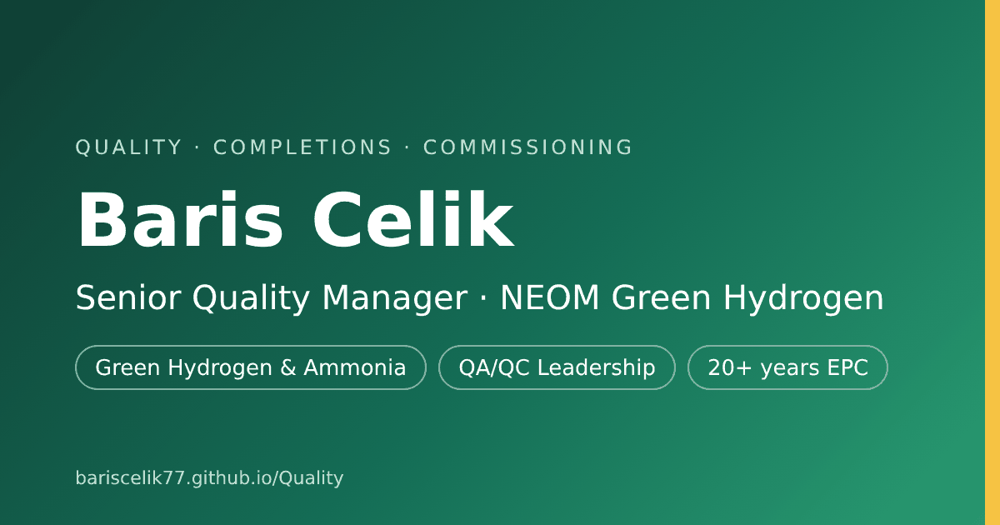
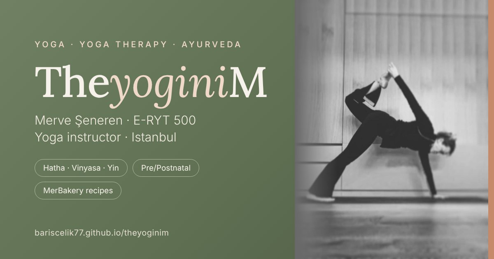

Quality · Completions · Commissioning
Baris Celik
Portfolio of a Senior Quality Manager on the world's largest green hydrogen and ammonia project: career, projects, quality calculators and dashboards.
Visit the portfolio →
Yoga · Yoga therapy · Ayurveda
TheyoginiM
Merve Şeneren's yoga site: classes, a bilingual pose guide and more than a hundred MerBakery recipes.
Visit TheyoginiM →